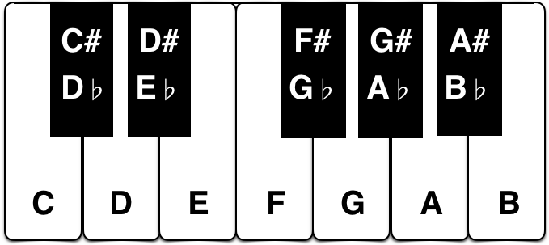

|
|||||||||
|
|||||||||
|
Música é a arte é ciência do som, conservando entre si relações logicas e ordenadas!
| Harmonia: | É um conunto de notas musicais tocados ao mesmo tempo. |
| Melodia: | É um conjunto de notas musicais tocadas uma após a outra. |
| Ritimo: | É a ordem métrica seguida na música. |
|  |
Uma nota é o menor elemento da música, |
É muito importante lembrar que existem apenas 12 notas. Cada acorde, escala, modo, motivo ou melodia é feito de alguma combinação dessas 12 notas.
É a escala que contém todas as 12 notas.